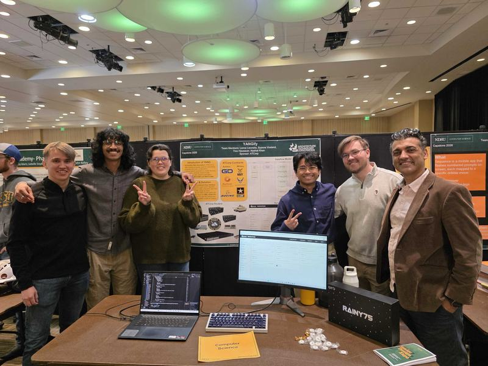

Software Developer
Aug 2026 – Present
Fargo, ND
Software developer at Noridian Healthcare Solutions.
Finishing an M.S. in Computer Science at North Dakota State University.
I'm a software developer at Noridian Healthcare Solutions and a graduate student at North Dakota State University, where I'm completing an M.S. in Computer Science. My path here started somewhere else: I hold a B.A. in Criminal Justice from Minnesota State University Moorhead, and that background still shapes how I think about security, process, and the people affected by the systems I build.
Outside of full-time work I teach live online coding classes to kids ages 6–14 through Coco Coders, covering Scratch, Java, JavaScript, and web development. I also play violin in the orchestra at Minnesota State University Moorhead, and I volunteer with 4 Luv of Dog Rescue, caring for rescue dogs and helping at adoption events.
Aug 2026 – Present
May 2026 – Aug 2026
May 2025 – Jan 2026
Mar 2026 – Present
Jan 2025 – Present
Sep 2024 – Present
Aug 2024 – Aug 2025
Apr 2023 – Aug 2024
Handled the database migrations and built the foundation and backend of the project so the rest of the group had a stable base to keep building on.
Built the products page and all cart functionality: adding items to the cart, adjusting quantity, and keeping a running total.
Created a Guinea Pig object tied to a database, adjusting inventory dynamically based on user input.
Checked whether website IPs were safe or malicious, with a separate class per check category. Built mostly independently.

A UI that ingests a network YANG file, allows adjustments, and exports the result as XML or JSON depending on whether the target protocol is RESTCONF or NETCONF.
An isolated virtual environment that downgrades and re-scans packages, reports the vulnerabilities it finds, applies fixes, and re-verifies the result.
Jan 2025 – Dec 2026
Aug 2023 – May 2026
Aug 2019 – May 2023
Cares for rescue dogs and supports adoption events.
Graduation, the capstone showcase, orchestra, and the friends, family, and loved ones who made the last few years what they were. Pick any thumbnail to see it larger.
I'm always glad to talk about software, security, or teaching. The fastest way to reach me is email.